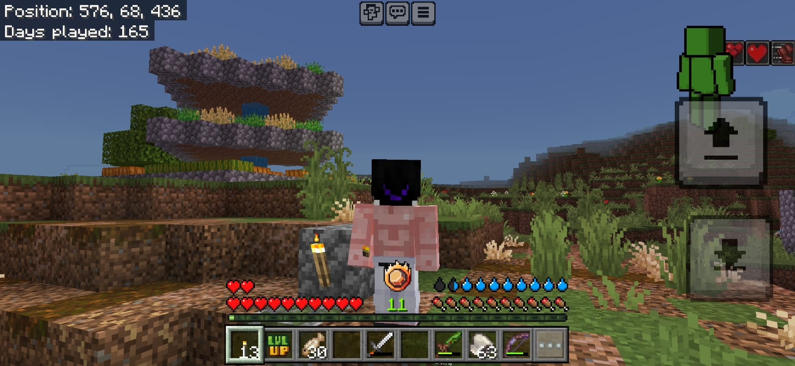
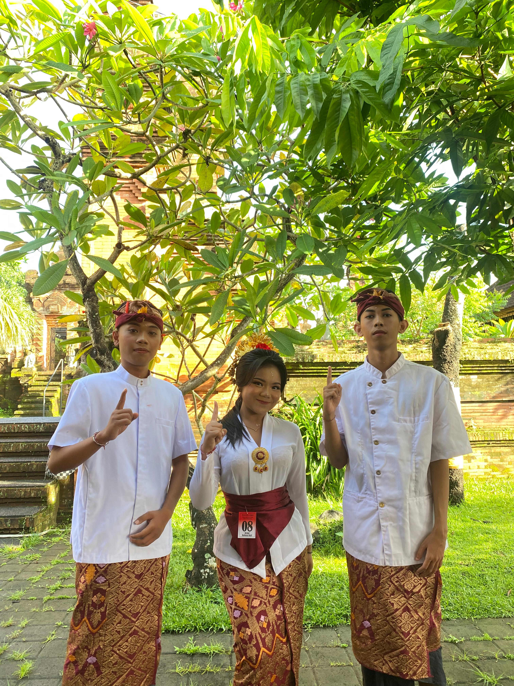
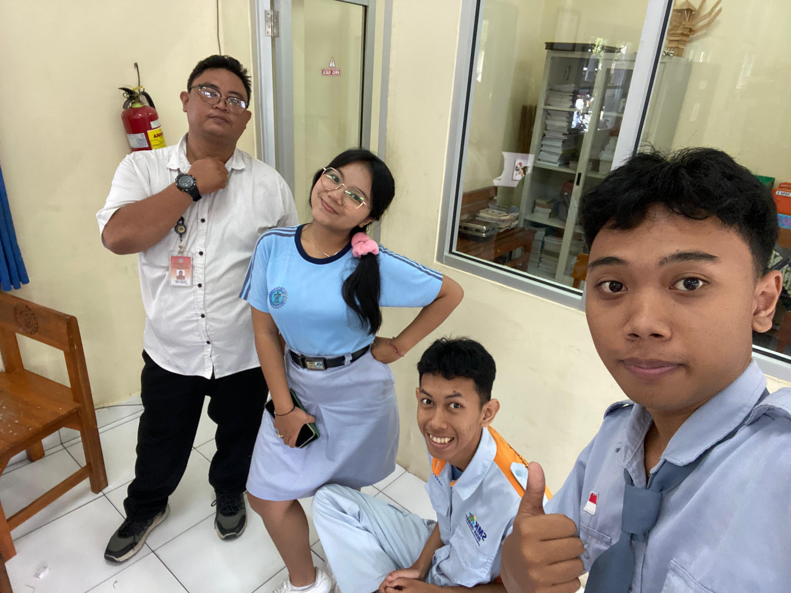
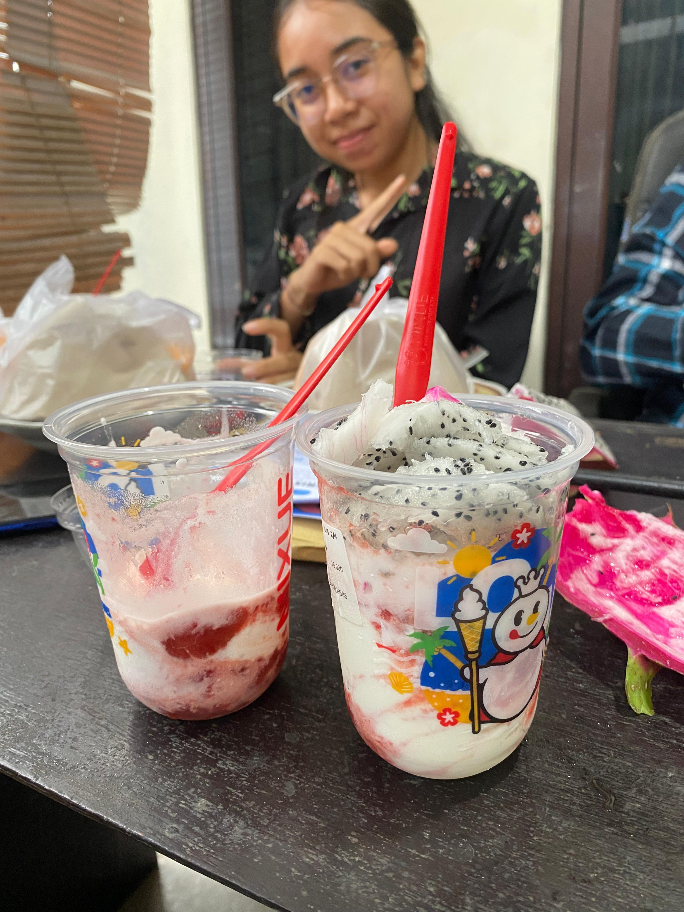
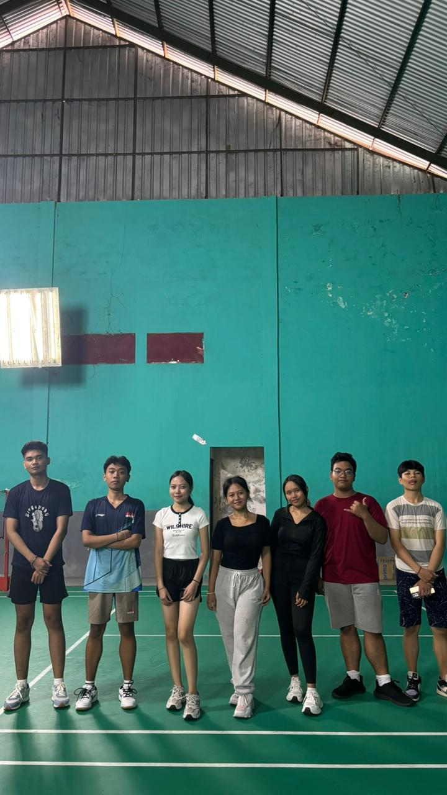
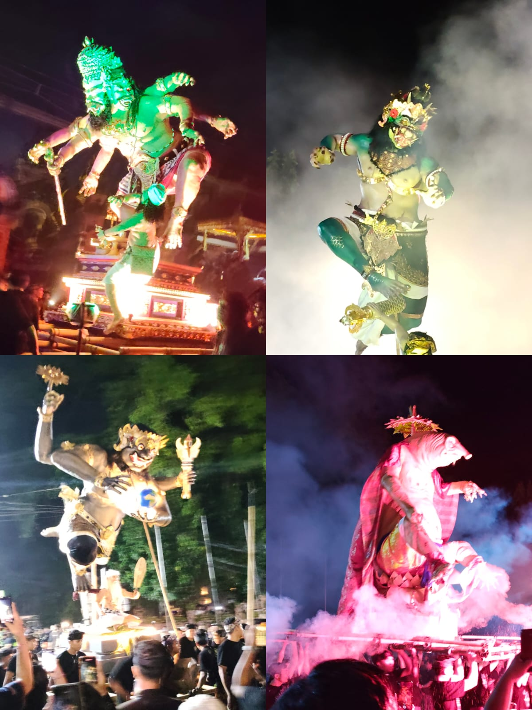
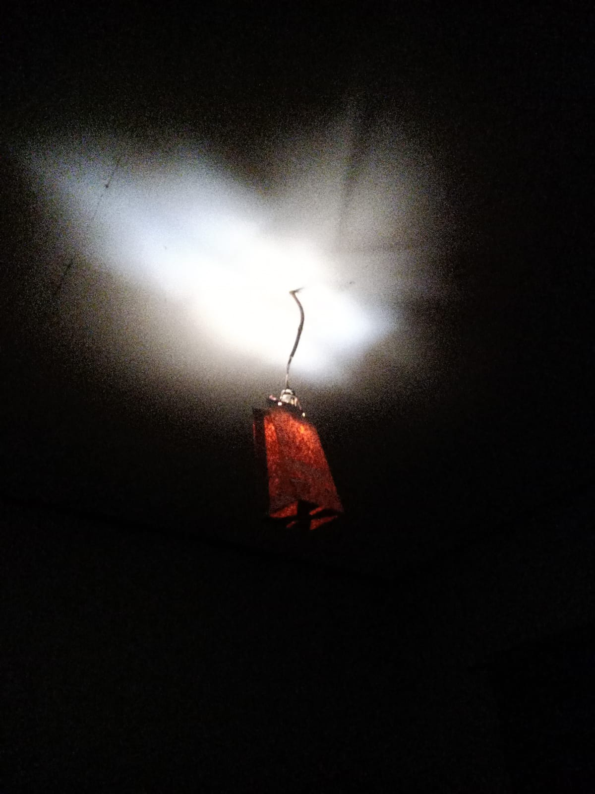
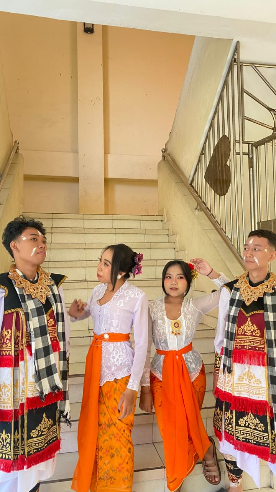
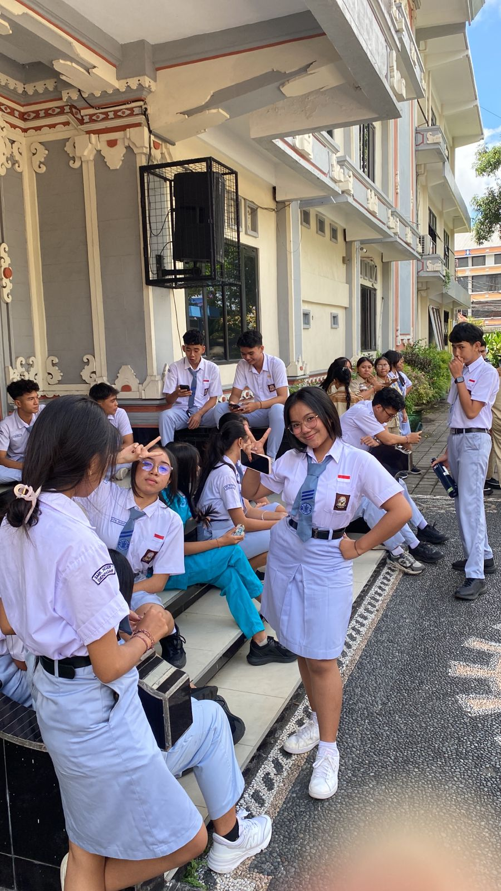

Saya di semester ganjil ini kurang lebih cukup puas beberapa mapel memberikan materi lalu di uji dan mendapatkan output sebuah nilai, yang paling berkesan semester ini mugkin dari pak unggah dan pak redy walau bukan kesan yang cukup baik sihh jadi untuk pak unggah kami di suruh membuat game jujur pada saat di suruh aku benar benar gak tau apa apa soal java script yang membuat ini sangat sulit tapi untungnya pak unggah mengijinkan penggunaan AI di tugas ini yang menurutku ini bagus karena di zaman sekarang kurasa belajar menggunakan AI lebih mudah dari pembelajaran konvesional tapi skill dasar yang di dapat di pelajaran konvesional juga gak kalah penting, cuma aku lebih prefer pake Ai karena kalo pake Ai hasilnya bakalan jauh dari ekspetasi apalagi kalau yang make pinter, dan pak redy menurut ku tugasnya seru bikin aplikasi di flutter tapi tolong lebih sering hadir pak karena saking jarangnya bapaknya hadir pengetahuan kami soal flutter itu nyaris 0, jika bicara soal pemahaman aku sih merasa kemampuan agama dan komunikasi ku yang paling bagus tapi kenapaaa nilai agama ku kurang memuaskan masa nilai satu kelas pada sama kalo gitu apa dong spesialnya aku rajin menjawab kalo ulangan selalu di atas 90, dan nilai ku di basis data sih menurut ku bagus yaa karena aku mungkin gak sejago kasuma tapi aku suka pelajaran basis data.
di semester ganjil saya mendapatkan banyak keseruan dan kesempatan baru pengalaman yang tak tergantikan dan penuh kenangan, jika di jelaskan rasanya campur aduk antara senang, sedih, kecewa, bahagia, terharu, harapan, dan masih banyak lagi semester ini telah mengubah ku menjadi pribadi yang lebih tangguh dan lucu melalui kisah kisah lawak yang di berikan
Ark: Minecraft
Diposting pada: 5 Agustus 2025

Di hari sekolah yang membosankan aku gabut karena hariini tidak ada guru yang mengajar dan tugas ku sudah selesai aku pergi ke belakang (bangku richie dan wira) mereka lagi berdiskusi mau bikin world Minecraft bersama aku " wah asik tuh gas lah aku ikut" lalu wahyu juga mau ikut di tambah tristan kami ber 5 memulai world baru dengan mod RL craft mod ini kayak dunia fantasi gitu jadi kita bisa menjelajahi dungeon dan mendapatkan item itu kita mabar bisa setiap hari sampe akhirnya kita bosan dan mulai jarang login.
Momen Favorit
Menjelajah dungeon.
Kalo mati di backup wira.
Di kasi pedang sama wahyu.
Lomba 17an
Diposting pada: 17 Agustus 2025
Lomba 17an udah deket tapi kelas kita baru mulai membagi orang untuk lomba " emang dasarnya kelas males" ujarku dan aku terpilih mengikuti lomba kera sakti bersama teman-teman ku yang lain gak nyangka tapi dengan gaya nyentrik ku yang mirip sun wukong kami berhasil meraih juara 2 wow gak espek wok.
Momen Favorit
Nyoba Sarung.
Pas Lomba.
Pengumuman Juara.
HUT SMK
Diposting pada: 24 September 2025
Hari ini adalah hari ulang tahun my SMK guah, banyak acara yang kami lewati dan acaranya seru seru dan spesialnya karena aku jadi MC tahun ini bersama pradnya kami memandu acara.
Momen Favorit
Jalan Santai
Pas ngeMC.
Fotbar.
Ke Pantai
Diposting pada: 25 Oktober 2025
Hari ini sesuai janji aku, abi, wahyu, tristan, willy, dan pertiwi kami akan kepantai dalam rangka sudah menyelesaikan ulangan yeayy, aku berangkat bersama abi karena kita 1 jalan dan kami pergi ke pantai karang, disana kami jalan jalan sambil ketawa ketiwi kayak orang gila, lalu kami gak langsung pulang tapi kami kerumah pertiwi untuk makan tapi gak jadi akhirnya kami makan di ACK.
Momen Favorit
Menunggu temen temen di circleK.
Jalan Jalan sambil bercanda.
Mampir rumah tiwi.
Lomba Blockchain NT
Diposting pada: 30 Oktober 2025
Suatu hari aku lagi belajar santuy lalu ku lihat kasuma keluar kelas di panggil sama bu kartika aku yang kepo pun pura pura buang sampah eh tiba" aku di tawari lomba cerdas cermat aku yang mumpung gaada kesibukan saat itu mengiyakan tawaran itu akhirnya kami aku kasuma dan orion pun berlatih untuk lomba pada hari lomba kami lumayan gugup tapi kami berhasil keluar sebagai top leaderboard bjirrrr, TAPI di hari ke2 babak final kami di kejutkan oleh soal yang tak masuk akal bukan hanya itu tapi beberapa soal yang kami benar hanya di beri 2 poin padahal harusnya 3 poin yang menyebabkan kami kalah di hari itu, aku benar" kecewa dengan lomba itu.
Momen Favorit
Latihan Bareng 2 Barudak.
Jadi Top 1 di penyisihan.
Dapet duit lomba.
Liburan Keluarga Main Ke Living World Denpasar
Diposting pada: 24 Desember 2025
Di liburan akhir tahun ini keluarga kami memilih untuk main Time Zone di living world, Jadi keluarga ku itu punya agenda setiap akhirnya tahun (ibu dan ajungku gajian) kami harus liburan tapi liburan kaliini aku mengajak kakak dan adik sepupu ku yang membuat liburan kaliini lebih menyenangkan, sebelum ke living kami juga makan sebentar di sekitar jalan nonja itu kerang nya enak jir, setelah makan baru aku lanjut ke living world dan aku kayaknya lagi hoki hari itu jadi di game yang bisa di bilang judi kami bermain spin kotak untuk mendapatkan tiket nah pas giliran ku aku mendapatkan angka terbesar yaitu 150 tiket behh jago bat gua lalu sebelum pulang kami habiskan untuk ber swafoto bersama sebagai bahan postingan Instagram.
Momen Favorit
Makan di jalan nonja.
Dapet skor 150.
dapet nyoba parfum.
UPDATE BARU
Lomba Debat Bahasa Bali
Diposting pada: 12 Februari 2025

di liburan kali ini aku memutuskan untuk melakukan hal yang lebih menarik dari liburan sebelum libur ku dimulai agak berbeda dari orang lain karena bisa di bilang aku liburan lebih awal hehe.. jadi sebelum libur aku mengikuti lomba debat bahasa bali jadi aku banyak tidak menghadiri tugas dan berada di kelas tapi aku tetap mengerjakan tigas tugas ku, cerita ini di mulai dari aku yang tiba tiba di tawari lomba oleh bu fibri setelah kemarin aku ditawari devita untuk ikut lomba debat bahasa bali, singkat cerita aku mengajukan diri dan di pilih dengan percaya diri "ya pasti kepilih si" ucap ku hari latihan pun tiba tim ku berisikan 3 orang yang semuanya adalah orang" yang kocak 1.pertiwi si pemimpin 2.artha tukang bully Pertiwi 3.aku pembantu artha keseharian ku berubah dari awal belajar biasa di kelas menjadi selalu dispen di setiap mapel akhir untuk pergi ke perpus dan latihan, latihan kami sering di temani pak oki/oky aku gak tau, pokoknya dia asik orangnya dan menjadi pemimpin dalam pembullyan Pertiwi xixi, latihan kami berjalan cukup buruk banyak waktu yang terbuang untuk bercanda dan kegiatan pembinaan juga sangat jarang tapi walaupun banyak bercanda aku tetap berusaha untuk belajar dengan keras bahkan aku menggunakan bahasa baki halus ketika berbicara di rumah agar semakin fasih, tibalah hari lomba dan dari 10 mosi yang di bagikan kami mendapatkan mosi ke 10 yaitu lebih penting kesucian tempat suci, atau komersialisasi tempat suci, aku sih udah siap sama semua materi tapi ternyata... semua berjalan baik setidaknya untuk ku aku gak merasa kurang dalam penyampaian ku atau caraku melawan argumen lawan tapi ya namanya lomba bertim kalo PD sendiri apa artinya, jadi kami kalah di lomba tersebut jujur aku gak terlalu sedih karena aku jadi jago ngomong pakai bahasa bali halus dan lumayan dapet makan enak saat latihan juga kami(Pertiwi dan aku) main kerumah artha di serangan untuk latihan walaupun hasilnya adalah liburan tapi it's okay asal kami senang

Momen Favorit
Dispen.
Latihan di perpus.
Ke rumah Artha.
Liburan Produktif
Diposting pada: 20 Februari 2025

di liburan ini aku dan tim kokulikuler ku yang beranggotakan(abi, wahyu, tristan, pertiwi dan aku) kami berencana untuk produktiv dan menyelesaikan tugas kokulikuler yang ada di lms skensa, dan kami memutuskan untuk kerja di rumah Pertiwi jadi setelah penentuan hari aku langsung otw kesana sempet lewat karna lupa tapi tetap sampai tanpa kendala, tebak kami memulai tugas ini dengan apa? riset? menyusun naskah? NO. kami mulai dengan maling buah naga di rumah Pertiwi HA HA HA baru setelah itu kami beli eskrim ya tristan yang traktir sih (btw makasi tristan) dan aku mencapur eskrim ku dengan buah naga curian, lalu kami langsung take menggunakan naskah AI sederhana dan di tutup dengan sesi deep talk yang di akhiri karena tiwi lupa kalo dia mau menghadiri acara ulang tahun temannya (abi udah pulang duluan btw)
Momen Favorit
Maling buah.
Ngakak pas take.
Deep talk session.
Tips Mengatasi Bosan Di hari Libur
Diposting pada: 8 Maret 2025

di suatu libur yang damai aku sangat amat bosan jadi aku mengajak wahyu dan tristan untuk bultang wahyu gas tapi Tristan sibuk bikin naskah teater jadi aku main berdua dengan Wahyu dan sambil menunggu waktu sampai jam 2 siang di gor nya aku membuat mainan sederhana dari kardus dan jam pun tiba aku langsung otw ke gor nya kami pun main tapi hari pertama kami main masih sangat kaku dan aku memutuskan untuk main lagi besok dan mengajak Richie, Richie sih awalnya ikut karena wahyu mau mengajak gebetannya si d tapi pas Dateng malah ngajak temen smp tapi gapapa sik kok temennya wahyu dan aku juga puas mainya ha ha ha, setelah pulang dan sampai di rumah aku melanjutkan mainan kardus ku mula mula hanya coba buat 1 tapi keterusan jadi aku sampai buat full set alat berubah menjadi kamen rider jirrr (setidaknya 3hari ku berubah menjadi suatu karya😅👍🏻)
Momen Favorit
Main Bulutangkis.
Bertemu teman baru.
Membuat mainan dari kardus.
Nyepi Saka 1948
Diposting pada: 19 Maret 2025

di hari pengurupukan aku sudah siap dari pagi untuk liat ogoh" nanti malam, aku rencana nya seperti tahun lalu yaitu nonton bersama keluarga lalu pisah dan nonton sama purnama tapi sembari menunggu aku mabar epep dulu yakan sama temen gang ku dan di situ jioman nyeletuk " eh ayok kita nonton nanti malem bareng" Komang pun juga mengiyakan ya aku bilang gas aja lalu saat malam tiba, aku kaget karena tiba tiba juna dan jioman mendatangi rumah ku " gungde ayuk kita nonton" aku bilang ayok tapi jioman kan sama komang lah juna sama siapa? lalu juna memandang ku dengan tatapan memelas LAH AKU MAU SAMA TEMEN KU (si purnama) karena memang kami sudah dari tahun kemarin aku mau mengandeng sama dia dan juna pun sedih lalu pulang dengan membanting pintu aku ya gak peduli soalnya salah sendiri gak punya tumpangan jadi aku pun nonton sama temen gang ku dan purnama dan ternyata Komang satu sekolah dan satu jurusan dengan purnama lalu Karena sudah larut dan beson aku otonan paginya aku minta purnama untuk pulang, beson paginya aku pun langsung otonan jam 6 pagi btw lalu tidur bangun doang karena wifi dimatikan oleh orang tua ku lalu pada malam hari karena menghidupkan lampu itu tidak boleh jadi aku menutupi lampu ku dengan kertas belanjaan soalnya aku gak suka tidur dengan lampu mati total

Momen Favorit
Mabar epep.
Nonton ogoh-ogoh.
Menutupi lampu dengan kertas belanjaan.
Otonan.
Jadi Pragina
Diposting pada: 29 Maret 2025


oiya liburan ini juga aku ikut menari baris tunggal jadi awalnya abi mengajak kasuma untuk ikut aku pun berkata "aku juga bisa bi" tapi abi menanggapi nya sebagai bercandaan dan tibalah harinya latihan pertama kasuma yang gak mau sendiri saat latihan pun mengajak ku, aku awalnya menolak tapi dipikir" aku juga gak ada kegiatan sih dan kebetulan bisa menari baris juga karena kasuma bilang udah di daftarin paksa jadi aku ngikut aja dan pada hari itu berjalan cukup lancar sampai di hari dimana pak sangtu merekrut banyak siswa dan siswi untuk ikut nyenuk dan abi memilih ku sebagai partner nya "tch sudah ku bilang aku bisa nari" ucap ku dalam hati dan kami pun latihan nyenuk juga baris di sela sela liburan untuk ngayah oada odalah karya ngenteg linggih di smkn 1 denpasar aku dapat warna putih bersama richie, adit, ogas, abi, pertiwi, ayuk dan 2 orang lagi dan akan menari sampai kembali bersekolah mungkin...
Momen Favorit
Latihan nari.
Nari baris.
pas ada yang berdiri duluan wkwkw(vid yang ke2).
Latihan Nyenuk.
Rencana di semester genap
Diposting pada: 5 Januari 2025
Rencanaku di Semester ini adalah untuk menjadi seorang yang berbeda dari semester sebelumnya, aku cukup besenang-senang di semester lalu dan aku ingin di semester ini lebih senang lagi, aku juga ingin menemukan makna dari hidup ku yang bisa membuat ku lebih bergairah, mungkin penolakan atas cinta ku tahun lalu bisa menjadi api pemantik semangat ku tahun ini, aku punya rencana untuk belajar tentang data analyst itu lumayan menarik jadi aku mulai dari ikut kelas di revou.id, aku gak akan bilang sesuatu kayak aku akan belajar lebih giat karena aku berencana belajar menjadi data analyst jadi tidak heran kalau nanti nilai ku menurun tapi kualitas ku bertambah.
Rencana di semester genap
Diposting pada: 5 april 2025
Semester ini kayaknya bakal jadi ajang pembuktian buat aku, soalnya fokus utamaku selain beresin tugas-tugas kokurikuler di LMS Skensa bareng tim yang isinya orang-orang kocak, aku juga bakal sibuk banget ngayah buat acara Odalan Karya Ngenteg Linggih di sekolah. Meskipun kemarin kalah lomba debat, tapi aku dapet modal jago ngomong bahasa Bali halus dan itu bakal aku bawa terus biar makin fasih, apalagi sekarang aku juga kepilih jadi penari Baris Tunggal dan Nyenuk bareng Abi dkk setelah sempat dianggap bercanda. Intinya sih, rencana kedepannya aku pengen tetep produktif ngerjain tugas pake bantuan AI biar cepet kelar, tetep kreatif bikin karya-karya unik dari kardus di sela waktu luang, dan pastinya bisa bagi waktu antara latihan nari sama sekolah biar semuanya jalan gas terus tanpa ada yang keteteran, ya walaupun ujung-ujungnya pasti bakal banyak sesi deep talk atau kejadian random lainnya bareng temen-temen.